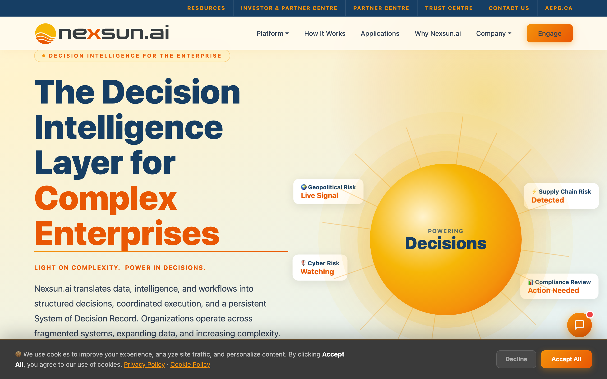
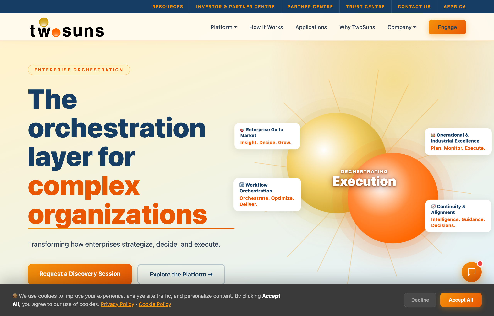
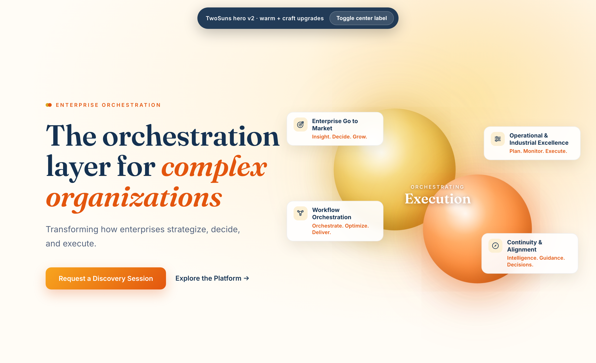
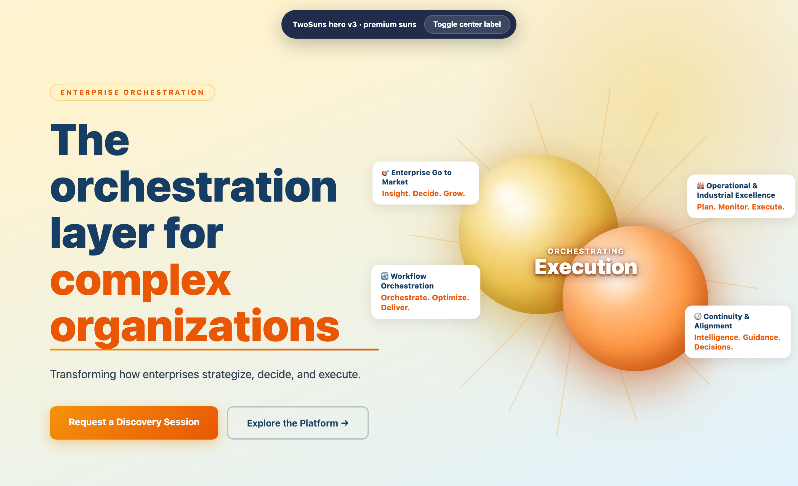
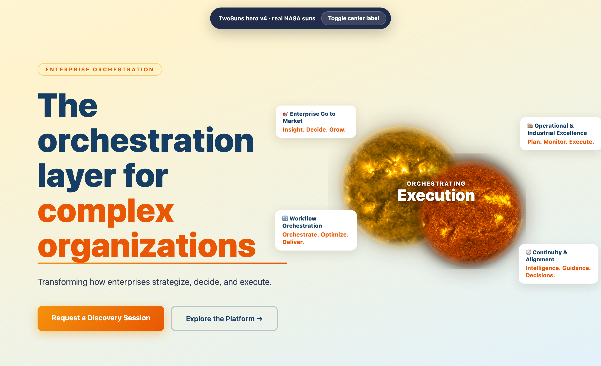
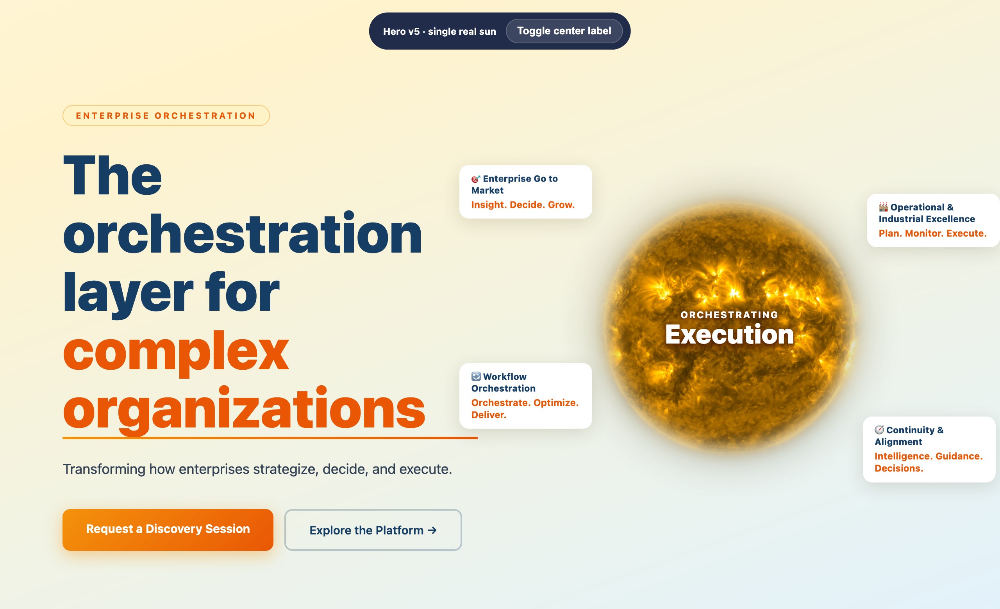
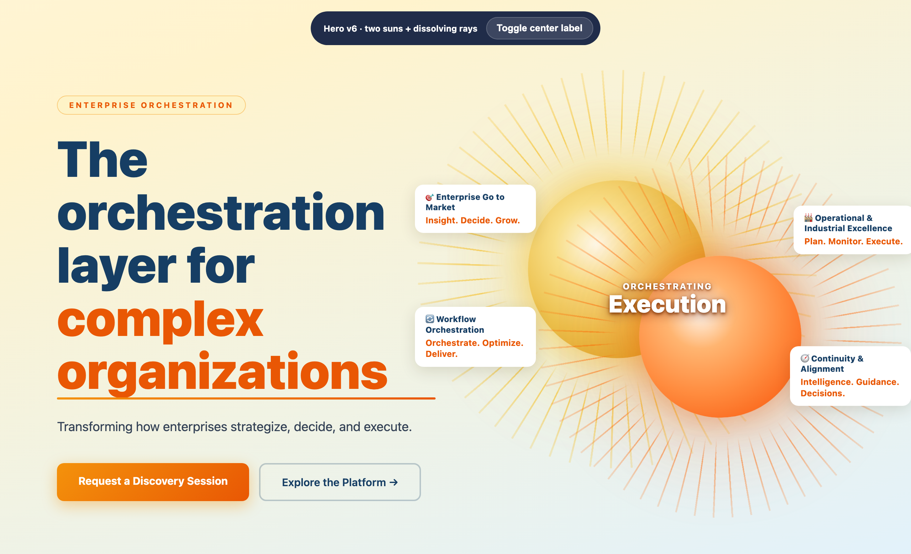
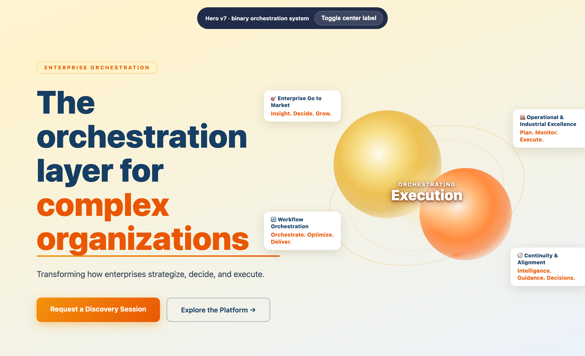

Every direction we explored for the homepage hero, from the original Nexsun sun through eight TwoSuns iterations. Click Open live on any version that still has an interactive file.

The pre-rebrand starting point. One gold sun, "Powering Decisions," Decision Intelligence framing. The single-sun look that read as a real sun.

Two flat gradient suns, rotating rays, emoji pillar tags. The version on the site right now.

Fraunces display serif, custom line-icons (no emoji), film grain, motion cut to one slow drift.

Limb-darkening, specular highlight, surface granulation, contact shadow. Better, but still read as polished CSS spheres.

Two actual NASA solar photographs, gold (171) + orange (304). Truly real, but two real suns read as sci-fi.

A single real sun photo, more believable than two, but loses the "TwoSuns" cue in the hero.

Each sun throws a fine sunburst that dissolves outward, like the old Nexsun rays, but doubled it felt busy.

Soft-edged suns that merge with a light bloom, wrapped by a tilted orbit with traveling light nodes. Two suns held in orchestration, no hard circles.